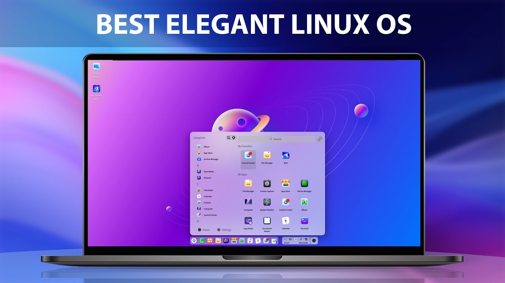
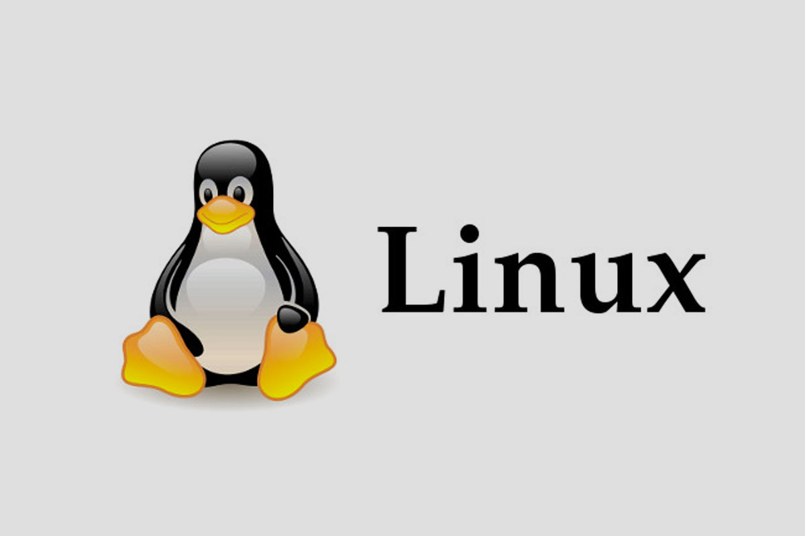
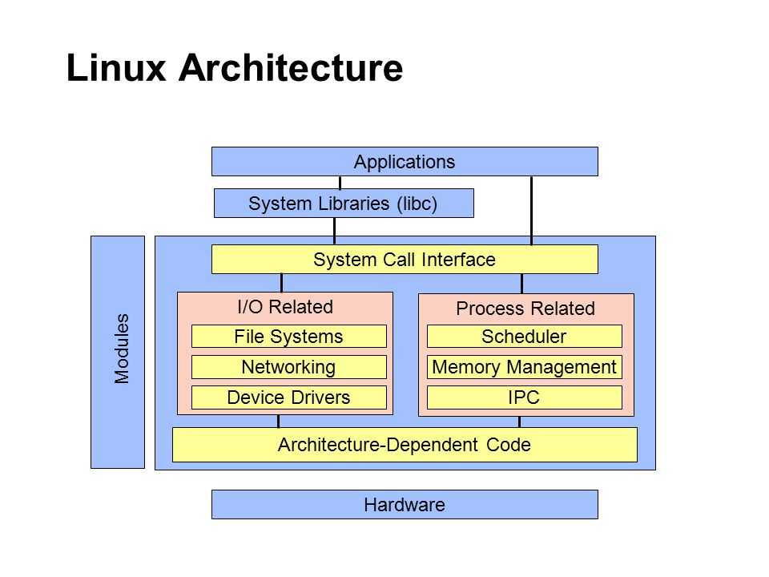
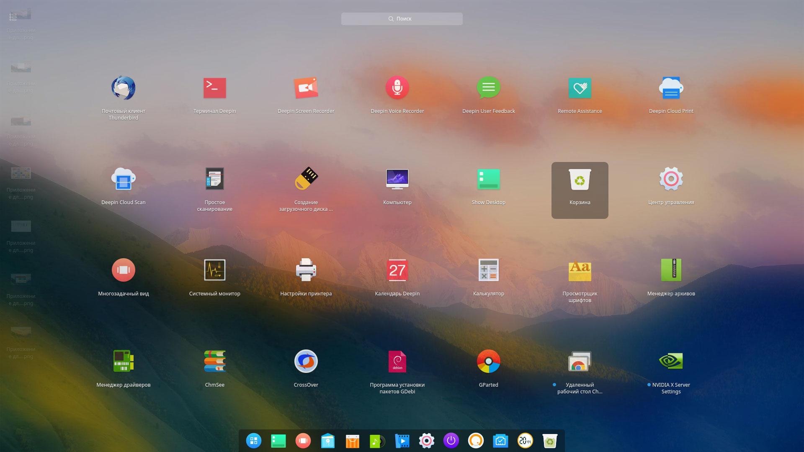
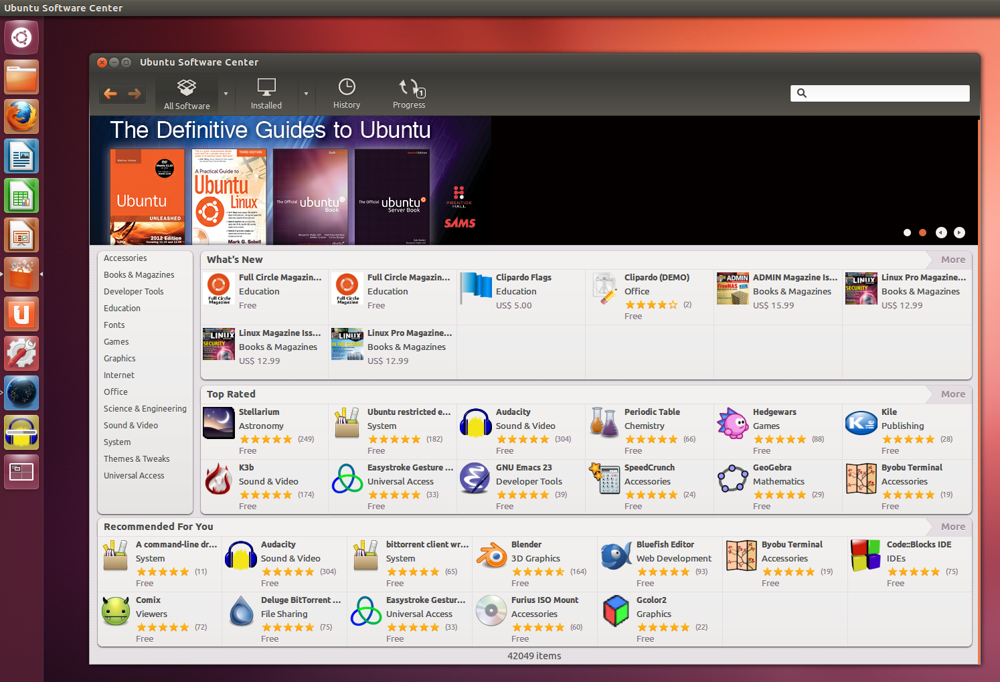

Linux
1. Linux Kirish
Linux — bu Unixga asoslangan, ochiq kodli operatsion tizim bo'lib, 1991 yilda Linus Torvalds tomonidan yaratilgan. Linux operatsion tizimi keng tarqalgan va turli xil qurilmalarda, jumladan serverlar, ish stantsiyalari, smartfonlar va hatto superkompyuterlarda ishlatiladi. Ochiq kodli bo'lishi tufayli, Linuxni har kim o'zgartirishi, tarqatishi va undan foydalana oladi.
Linux yuqori darajada moslashuvchan va kuchli xavfsizlik xususiyatlariga ega. U ko'plab turli xil taqsimotlarda (distributions) mavjud bo'lib, har biri turli xil foydalanuvchilar va maqsadlar uchun moslashtirilgan. Eng mashhur Linux taqsimotlari orasida Ubuntu, Fedora, Debian, Arch Linux va Red Hat kiradi.
2. Linux Arxitekturasi
Linux arxitekturasi oddiy, ammo kuchli dizaynga ega. Quyida Linux arxitekturasi asosiy komponentlari haqida ma'lumot keltirilgan:
Kernel
Linux kernel — bu operatsion tizimning asosiy komponenti bo'lib, tizim resurslarini boshqarish, apparat va dasturiy ta'minot o'rtasidagi muloqotni ta'minlash uchun javobgardir. Kernel jarayonlarni boshqarish, xotira boshqaruvi, apparat qo'llab-quvvatlashi va boshqa asosiy funksiyalarni bajaradi.
System Libraries
System Libraries — bu kernel funksiyalarini amalga oshirish uchun zarur bo'lgan kutubxonalar. Glibc (GNU C Library) kabi kutubxonalar dasturiy ta'minot uchun muhim tizim chaqiruvlarini ta'minlaydi va dasturlarni kernel bilan bog'laydi.
System Utilities
System Utilities — bu operatsion tizimni boshqarish va sozlash uchun kerakli bo'lgan vositalar. Bunga misol sifatida bash shell, cron, systemd va boshqa ko'plab yordamchi dasturlar kiradi.
User Space
User Space — bu foydalanuvchi dasturlari va jarayonlari ishlaydigan joy. Foydalanuvchi dasturlari kernel orqali tizim resurslariga kirishadi va foydalanuvchi tajribasini ta'minlaydi.
Linux arxitekturasi kuchli va moslashuvchan bo'lib, turli xil qurilmalarda samarali ishlashga mo'ljallangan. Kernel, system libraries, system utilities va user space kabi asosiy komponentlari orqali Linux operatsion tizimi yuqori samaradorlik va ishonchlilik ta'minlaydi.
3. Linux Foydalanuvchi Interfeysi
Linux foydalanuvchi interfeysi (UI) juda xilma-xildir va turli xil muhitlarga ega. Quyida eng mashhur Linux UI elementlari haqida ma'lumot berilgan:
Desktop Environments (Ish stoli muhiti)
Linuxda bir nechta ish stoli muhitlari mavjud, har biri o'ziga xos ko'rinish va funksiyalarga ega. Eng mashhur ish stoli muhitlari orasida GNOME, KDE Plasma, Xfce, LXDE va Cinnamon kiradi. Har bir muhit foydalanuvchilarga o'z ehtiyojlariga mos keladigan interfeysni tanlash imkonini beradi.
Window Managers (Oyna boshqaruvchilari)
Window Managers — bu dasturlarni oynalarda boshqarish uchun mo'ljallangan vositalar. Eng mashhur window managers orasida i3, Openbox, Fluxbox va Awesome kiradi. Bu vositalar minimal va engil interfeyslarni ta'minlaydi.
Terminal
Terminal — bu buyruq satri interfeysi bo'lib, foydalanuvchilarga tizimni boshqarish va dasturlarni ishga tushirish imkonini beradi. Terminal orqali foydalanuvchilar buyruqlarni kiritish va bajarish orqali tizimni nazorat qilishlari mumkin. Bash, zsh, fish kabi shell’lar terminal muhitida ishlatiladi.
File Managers (Fayl boshqaruvchilari)
Fayl boshqaruvchilari fayllar va papkalar bilan ishlash uchun qulay interfeysni ta'minlaydi. Eng mashhur fayl boshqaruvchilari orasida Nautilus, Dolphin, Thunar va PCManFM kiradi. Bu vositalar foydalanuvchilarga fayllarni ko'rish, tahrirlash, ko'chirish va o'chirish imkonini beradi.
Notification Systems (Xabarnoma tizimlari)
Linuxda xabarnomalarni ko'rsatish uchun bir nechta tizimlar mavjud. Eng mashhur xabarnoma tizimlari orasida D-Bus va libnotify kiradi. Bu tizimlar dasturlardan keladigan xabarnomalarni ko'rsatish va foydalanuvchilarni muhim voqealar haqida ogohlantirish uchun ishlatiladi.
Linux foydalanuvchi interfeysi turli xil va moslashuvchan bo'lib, har bir foydalanuvchining ehtiyojlariga mos keladigan muhitni tanlash imkonini beradi. Ish stoli muhitlari, window managers, terminal, fayl boshqaruvchilari va xabarnoma tizimlari Linuxning qulay va samarali ishlashini ta'minlaydi.
4. Linux Dasturlarini Boshqarish
Linux operatsion tizimida dasturlarni boshqarish qulay va samarali funksiyalardan biridir. Quyida Linux tizimida dasturlarni boshqarishning asosiy usullari haqida ma'lumotlar keltirilgan:
Package Managers (Paket boshqaruvchilari)
Linuxda dasturlarni o'rnatish, yangilash va olib tashlash uchun paket boshqaruvchilari ishlatiladi. Eng mashhur paket boshqaruvchilari orasida apt (Debian va Ubuntu uchun), yum (Red Hat va Fedora uchun), pacman (Arch Linux uchun) kiradi. Paket boshqaruvchilari dasturlarni tez va oson boshqarish imkonini beradi.
Software Repositories (Dasturiy omborlar)
Software Repositories — bu dasturlarni saqlash va tarqatish uchun mo'ljallangan omborlar. Linux taqsimotlari rasmiy dasturiy omborlarga ega bo'lib, foydalanuvchilar u yerdan dasturlarni yuklab olishlari va o'rnatishlari mumkin. Omborlar orqali dasturlarni yangilash ham amalga oshiriladi.
App Stores (Dastur do'konlari)
Linuxda Snap Store, Flatpak Flathub kabi dastur do'konlari mavjud bo'lib, foydalanuvchilar bu yerdan dasturlarni o'rnatishlari va boshqarishlari mumkin. Bu do'konlar dasturlarni sandbox muhitida ishga tushirish imkonini beradi va tizim xavfsizligini oshiradi.
Manual Installation (Qo'lda o'rnatish)
Linuxda dasturlarni qo'lda o'rnatish ham mumkin. Bu usul odatda paket boshqaruvchilari va dasturiy omborlar orqali mavjud bo'lmagan dasturlar uchun ishlatiladi. Dasturlarni manba koddan kompilyatsiya qilish va o'rnatish orqali qo'lda o'rnatish amalga oshiriladi.
Containerization (Kontaynerlash)
Linuxda dasturlarni boshqarish uchun Docker kabi kontaynerlash texnologiyalari ishlatiladi. Kontaynerlar dasturlarni izolyatsiyalash va ularga kerakli barcha bog'liqliklarni ta'minlash imkonini beradi. Bu usul dasturlarni boshqarish va tarqatishni osonlashtiradi.
Linux operatsion tizimi dasturlarni boshqarishning bir necha qulay usullarini taqdim etadi. Paket boshqaruvchilari, dasturiy omborlar, dastur do'konlari, qo'lda o'rnatish va kontaynerlash texnologiyalari orqali foydalanuvchilar dasturlarni samarali boshqarishlari mumkin.
5. Linux Xavfsizligi
Linux operatsion tizimi kuchli xavfsizlik xususiyatlariga ega bo'lib, foydalanuvchilarni va tizim resurslarini himoya qilish uchun keng ko'lamli vositalarni taqdim etadi. Quyida Linux xavfsizligini ta'minlashning asosiy elementlari haqida batafsil ma'lumot berilgan:

SELinux (Security-Enhanced Linux)
SELinux — bu Linux kerneliga qo'shilgan xavfsizlik moduli bo'lib, tizimga nozik donador kirish nazoratini qo'shadi. SELinux yordamida foydalanuvchilar va jarayonlarning tizim resurslariga kirish huquqlarini qat'iy nazorat qilish mumkin.
AppArmor
AppArmor — bu Linuxda foydalaniladigan yana bir xavfsizlik moduli bo'lib, dasturlarni izolyatsiya qilish va ularning tizim resurslariga kirish huquqlarini cheklash imkonini beradi. AppArmor oson konfiguratsiya qilinishi va samarali himoya ta'minlashi bilan mashhur.
Firewalls (Olov devorlari)
Linuxda tarmoq xavfsizligini ta'minlash uchun iptables, nftables va firewalld kabi olov devorlari mavjud. Bu vositalar kiruvchi va chiquvchi tarmoq trafikini nazorat qilish va xavfsizlik siyosatiga asoslangan ravishda ruxsat berilgan yoki taqiqlangan trafikni belgilash imkonini beradi.
Antivirus
Linux tizimlarida ClamAV kabi antivirus dasturlari foydalaniladi. Bu dasturlar zararli dasturlarni aniqlash va olib tashlash uchun ishlatiladi. Linuxda zararli dasturlarning tarqalishi nisbatan kam bo'lsa-da, antivirus dasturlari qo'shimcha himoya qatlamini ta'minlaydi.
Encryption (Shifrlash)
Linuxda ma'lumotlarni himoya qilish uchun shifrlash vositalari mavjud. LUKS (Linux Unified Key Setup) yordamida disklarni shifrlash va GnuPG yordamida fayllarni shifrlash mumkin. Bu vositalar ma'lumotlarni ruxsatsiz kirishlardan himoya qilishga yordam beradi.
Linux operatsion tizimi xavfsizlikni ta'minlash uchun bir qator vositalarni taqdim etadi. SELinux, AppArmor, olov devorlari, antivirus dasturlari va shifrlash vositalari orqali tizimni va foydalanuvchi ma'lumotlarini himoya qilish mumkin. Bu vositalar Linux foydalanuvchilari uchun xavfsiz va ishonchli muhit yaratadi.